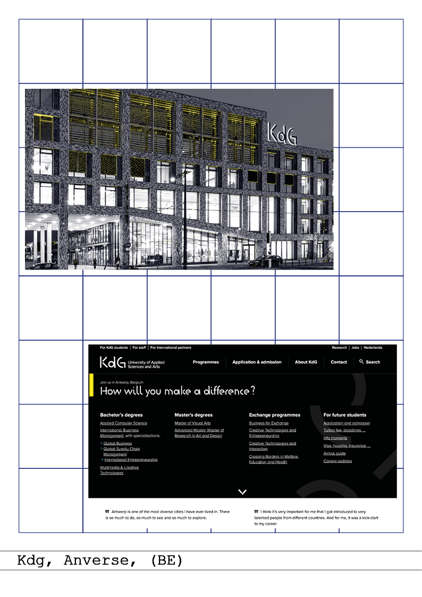
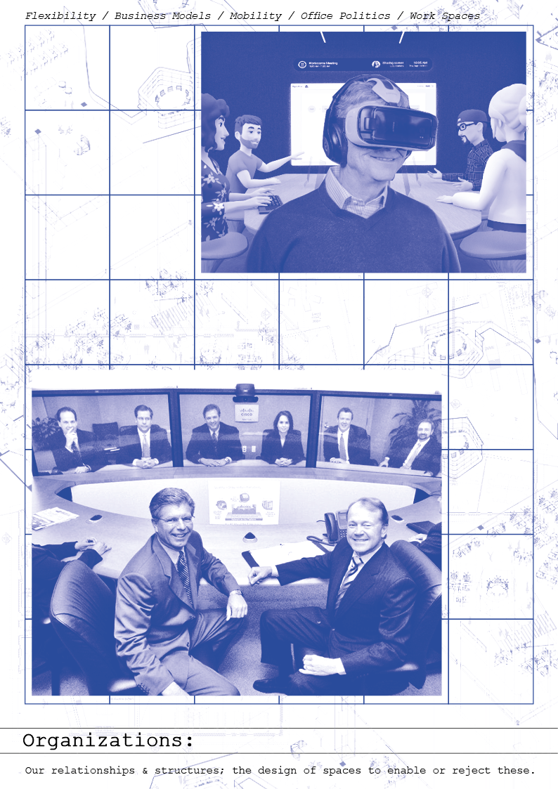
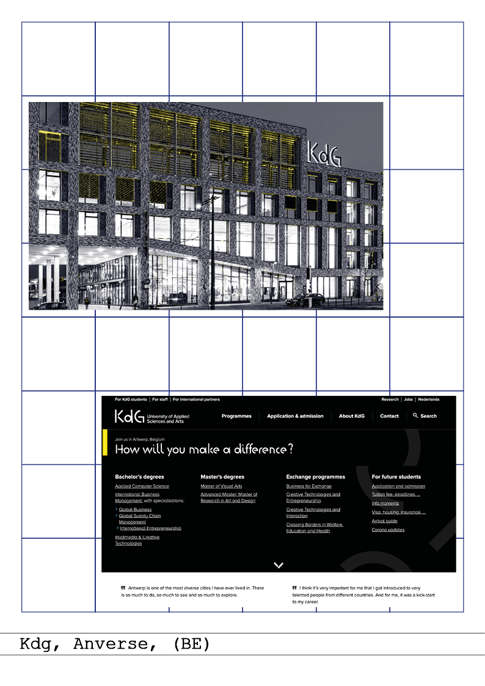
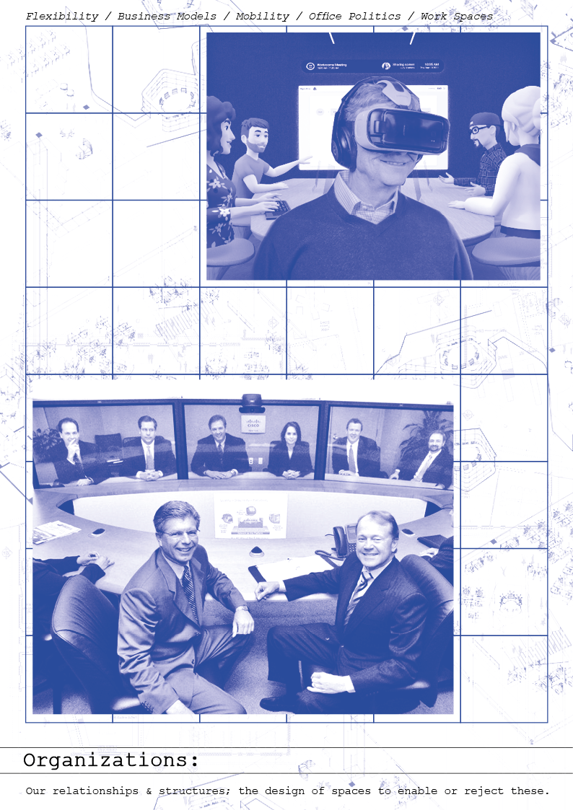
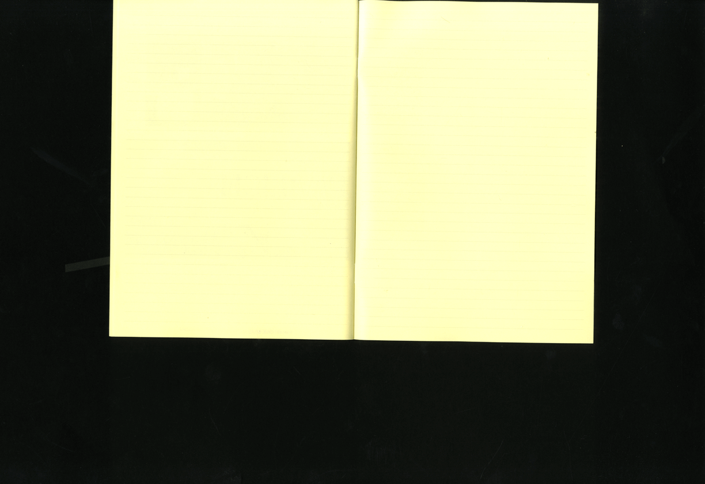
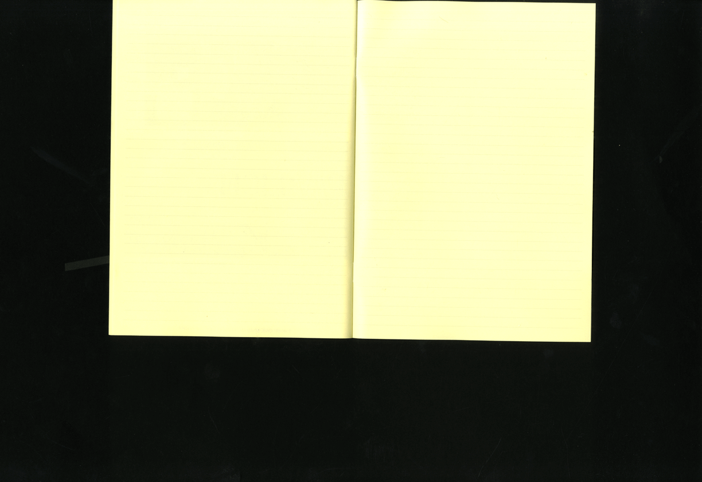

Jacopo Ronchese
Ludovico Amenta
Chiara Belpassi
Nico Ardini
Our project analyzes the space in three different scales, from the urban context to the design of interior spaces, in the didactic and university context. We started by elaborating a series of maps of the city of Urbino, taking the ISIA as a reference point, we highlighted different places of interest related to the institute, such as students' homes, meeting places and different distances. Moving closer, we analyzed the architecture of different design universities located in Europe, comparing them with their respective sites, which we considered as a virtual presentation space. Finally, we delved into common workspaces within environments such as offices or universities, trying to establish the main coordinates to be taken as a reference for the design of these spaces.

 



Daniele Pala
Martina Proverbio
Design Schools Insider is a tool for people interested in pursuing an education in the field of design and applied arts. When looking for information online about university programs most official websites will share very similar promotional contents about their courses and services, as well as very candid photos of their facilities. So many of them flaunt experimental learning-by-doing teaching methods, renown designers as professors and accessible labs and workshops for students. But how much what we see represent the truth? Our aim is to create a free space where students and former students can share their own raw, real and authentic experience through comments and pictures. Displaying the good and the bad, we hope to help fellow designers and artists to make the best decision.
Mirko Micheli
Klajdi Ribaj
Fluid is everything that is able to move without constraints, to take on transformative forms, to change over time.
In the educational context, many of the structures governing training are based on rigid and immutable schemes, often due to the system's difficulty in transforming itself and seeking new solutions and approaches.
One of the most difficult schemes to unhinge is the approach to training as something divided into watertight compartments, forced into modules in which the fields of knowledge that the student can access and those that are inaccessible are defined a priori. This approach does nothing but de-responsibility the student and force them to use their time with no choice.
Looking at the context of design, there are several experiments that have tried to radically redefine the current educational system. The results of these workshops, often the only ones to experiment with alternative ways, are rarely integrated into school structures. By reconsidering some of these aspects, we have tried to transform the current management of the curriculum and courses of our institute, in an attempt to make the management of time and learning more flexible.
Imagining the training path as a whole no longer divided into separate years, we have proposed the possibility of choosing all the available courses from the beginning. In this way it is the student who can attend the courses that they're interested in. None of them are mandatory, but some are necessary in order to access courses that require more skills. It would therefore be the student who would be able to totally manage his own time and the level of specialization he wants to achieve in a given area. Furthermore, the compulsory nature of some courses would be revised, giving the student the opportunity to assert any previous skills, to be certified with the final exam.
Bubbles is our answer to the questions we asked ourselves: a visual interface with a strong playful aspect, in which the student, through a series of "bubbles" that represent the individual courses, builds his own study plan by bringing together the programmed forms to join in a cluster.
By passing the cursor over each bubble, it is possible to view the information of the course and the prerequisites to be able to attend it. The application will verify whether the prerequisites for attending a course have been met, allowing or not the union of the course with the study plan.
A chromatic index defines whether the course belongs to a specific field of study, while the size represents the number of credits.
A similar interface could connect to the management of the spaces of the institution, implementing a function that allows you to view information on the time and place of the course, once clicked.

Anita Bortolotti
Eleonora Gelli
Laura Sisti
The purpose of the project is to highlight the presence of small groups within the Isia student group and their lack of integration with students from other universities in Urbino. In fact, as Isia students, we have noticed that our social relationships are limited to our class group, both during the breaks of the lessons and when we go out during the free time. Therefore, the project is developed through a visualization of the movements of an Isia student in a typical day, highlighting the main frequented places in Urbino, such as home, the university and a cafè, as a place of the free time. In the video, the Isia student is represented by an orange dot but, when the visualization aims to represent the divisions between the students of each course, each of them has been assigned a specific color (third year three-year course: orange; first year three-year course: brown; first year two-year course in illustration: euro orange; second year two-year course in publishing: yellow; Erasmus students: red).
Students from other universities are represented by black dots, interacting among themselves and in the city, never getting in touch with students from our school. The typical day chosen is Thursday, in which usually all the students of Urbino, leave home in the morning to go to classes in their respective universities, return home to have lunch and in the evening go out with their friends in the pubs of the city. This day of the week encloses the most part of the activities (educational and social ones) done by students. The decision to highlight these actions of daily life is given by the desire to make known how an Isia student, although many times living with students of other faculties, lives his life with the circle of class friends, limiting himself to relationships with them and little contact with the outside world, although having continuous opportunities in this city. To conclude, we would like to stimulate a reflection on the behavior of Isia students and the bubble in which they unconsciously live, to allow them to open up to new social relationships with people from other classes and faculties. At the same time, having a similar behavior with Erasmus students to make their insertion easier into the Urbino community. All this would serve to enrich everyone's way of thinking and appreciating different worldviews.
Martina Andalò
Elisabetta Silveri
Our focus is on tools, which are perhaps among the elements that have changed and developed the most in the last couple of years. In schools of design, graphics and visual communication there is often a large part of the curriculum dedicated to a more practical-laboratory aspect, which therefore works closely with specialized tools of the sector. The lockdown, however, has forced a new organization and the use of alternative tools to replace inaccessible analog ones. We have consequently witnessed a proliferation of platforms that sought more intuitive, spontaneous and accessible forms of communication, a proliferation of programs replacing the Adobe suite for the world of graphics and digital design, a lot of coding programs, online tutorials, recorded and streaming lessons. Obviously, the world of digital tools has advantages and disadvantages over the analog tools: certainly being able to speak and listen to experts from all over the world, record their speeches and be able to listen endlessly, have many more ideas and suggestions thanks to a lot of sitography and multimedia links, but on the negative side there are many more difficulties in comparison and exchange, group work is much less collaborative and obviously the unavailability of materials and tools irreplaceable digitally. We have thus compiled a list of online alternatives, free or very cheap, to the main courses of the ISIA curriculum with a purely provocative intent: if we apply the entire program to lectures remotely we lose much of the unique potential of the structures where we study and analog tools so much so that it is almost worth relying on commercial and cheap online platforms. With this work we aim to make people think about the pros and cons of the digital world, which has strengths but cannot perfectly match the potential of in-person instrumentation and teaching. If we do not observe carefully and with a critical eye this growing tendency to rely on the convenience of digital we will surely lose many opportunities that only a physical human relationship, a community and manual work can offer.
Basic design
Form and configuration are among the central themes of the course of Basic Design and are addressed mainly through the development of practical exercises, with the aim of allowing students to begin to manipulate and manage the perceptual, formal, technical and instrumental aspects of the project. The exercises belong to different types (ontological-structural, semantic, perceptual, cognitive, etc.. ) and include the following phases of development - a historical-cultural introduction that traces the evolution of the Basic Design course by analyzing the different approaches that schools, artists and designers have had towards this discipline and from which some of the exercises carried out derive directly; - a workshop activity, carried out both in class and at home, during which the student, through a path of experimentation, observation, formulation and verification, trains his sensitivity by acquiring mastery and awareness; - a moment of confrontation, discussion and verification in which the class, understood as a community of meaning, discusses and comments on the results obtained; - a theoretical intervention, with the aim of deepening and reconnecting the experience of the exercise to phenomena describable in scientific terms; The path in which the proposed activities move from a more expressive, intuitive and manual approach to a more rational one, working on the method and developing abstraction skills. The themes and methods of work and research take into account the different characteristics of the students, giving everyone the opportunity to compare and develop skills and knowledge more or less close to their qualities and attitudes. The works produced will be both physical (using mainly paper, pencils, colors, magazines and everyday objects). Some exercises will involve the interaction of the two media, a mode now common in the design process. The aim of the course is therefore to introduce the student to the different aspects of design, stimulating a conscious and critical approach.
Progettazione di caratteri (Typeface Design)
Typeface Design is a hands-on course in type design. A typeface is a communication tool defined by technology and language. It reflects the constant changes in the way we communicate and share information in print or on digital platforms. Typeface as a craft. To understand the craft, knowledge of history is important. Students will learn the basic principles of typeface design as they relate to their historical development. They will practice the rules and practice technical skills. Typeface as a Voice. The purpose of this course will be to develop a personal approach to creating a contemporary typeface. At the same time, students should be able to address critical questions about its use, need, and context.
Grafica editoriale (Editorial Design)
Through the theoretical/practical meetings provide the student with the basics of paper publishing, in order to understand and master the editorial project and the graphic design of a book, a series and a periodical publication and proceed to its realization. Design and implement graphic forms, correct and traditional, in relation to content. Enable the student to design and implement a book and periodical publication paying particular attention to typography, grid, page layout and use of images. Prerequisites A good general education, interest in reading and in design issues not only related to paper publishing, familiarity with layout programs. Topics of the exercises: two covers, without bands, on an assigned theme (essay and novel). One cover, with bands, on a free theme (catalog and/or photographic book). Two or more (design declinations) covers of a series, with bands, complete with graphic rules in .pdf format, on an assigned (or free) theme. One hardcover + one dust jacket, complete with graphic rules, free theme. Layout of two articles for periodical publication with text and images: technical data and materials provided by the teacher. Design and layout of a 48 or 60-page specimen + its cover, of a book with text and images on an assigned theme (4 alternative hypotheses given by the teacher) (or free), complete with technical specifications and editorial regulations for authors and graphic designers.
Design dell’imballaggio (Packaging design)
The world of packaging is today crossed by deep changes and innovative pushes. The regulations and the discipline that governs the use of materials, the technologies that enable the new distribution systems, require basic knowledge of materials and technologies and a creative and design ability. An ecological information of recyclability-biodegradability-compostability is necessary today. The student will field what he learned in previous years, will acquire notions for the design of innovative packaging with a focus on the communication of the brend. Will alternate lectures for ¼ of the hours, visit to the realities industrially producing packaging and practical lessons in the laboratory, under the supervision of the professor to achieve one or more projects of packaging design starting from research study on the Brief assigned. The realization of the project, will be brought to the examination at the end of the year according to the schemes assigned by the holder of the chair. The course is 48h: - 12h frontal - 6h company visits or work with specialists -30h of laboratory according to agreed schedule. Objectives Provide technical expertise on materials and technologies aimed at the production process of paper and packaging. To provide a technical background for the design representation (cad/cam design). Historical notes on packaging from 1800 to the present day Materials used to deliver goods to retail The conservation of goods Functional barriers Sustainable packaging and circular economy, compostability Packaging as a vehicle of communication and information. Graphics, illustration and composition for a good packaging Research and analysis for the definition and realization of a packaging The brief first ideas for packaging design bramstorming classroom on the realization of the project The brief can be ..... or accepted by external entities that must receive a packaging Knowledge of the tools for the realization of a laboratory packaging The die and emerging digital tools The program can be implemented with the possibility of finding industry experts who tell their experiences Insights into the industrial realization, timing of the project, technological cycles used, mention of costs Control and progress of projects with targeted checks each lesson Realization of the final prototype, consisting of: Design project made both blank and with graphics. Graphic part realized by hand or digitizable from a sketch to be printed on a cage, transferred on adhesive paper or directly in digital format on the support chosen for the packaging Presentation of a motivational report in A5 format with at least 4 photos of the project set, technical description of the materials used A visit to companies producing and using packaging to be submitted to the exams in a complete manner: Prototype project with graphics Motivational report Verbal description of the value of packaging in marketing and protection, circular economy
Design dell’interfaccia I (Interface design I)
Every day we interact with a complex system of infrastructures, technologies, algorithms, companies, individuals, data, protocols and more through digital interfaces. Phones, computers, and other interconnected devices mediate our behaviors, encourage interactions, and influence the way we see and experience the world around us. The role of designers is usually focused on making these interactions as fluid and "natural" as possible, to create an endless process of data exchange that generates economic value. This course aims to reframe the interface as a cultural and political object. Students are invited to experiment with different methods and practices to approach and critically explore the relationship between interfaces, data, and algorithms. Each chapter of the course revolves around a specific action (observe, alter, reveal, re-publish) and produces a different paper to develop different skills and methodologies. Programs for data management (spreadsheets) and visualization (Rawgraphs) will be used throughout the course. A basic knowledge of web-oriented programming (HTML, CSS, Javascript) will be required. It will be also deepened advanced ways of using vector graphics programs (Adobe Illustrator) and page layout (Adobe Indesign).
Photography I (Fotografia I)
The course proposes some exercises to be completed by the end of the scheduled lessons. These exercises come from a famous list of Assignments that John Baldessarri proposed to his students in 1970. This list is extremely reduced and adapted to the possibilities of photography and of the course. In this context the word "document" requires an autobiographical trespass on the part of the author (you). Part of the course will be the reconstruction or re-presentation of Raphael's School of Athens, as an exercise in copying, reproducing and documenting a process. A mandatory temporary obsession. 1. Sequence of Photographs documenting objects in flight. 2. Document a series of distracting objects (including people). 3. Learn to ask questions, accept changes as inevitable. (Fischli Weiss, How to work Better). 4. One person copies or makes-up random captions. Another person takes photos. Match photos to captions. 5. Document change, decay, metamorphosis, changes occurring in time. Photograph same thing at various times during the day. The final product will be a collective book of the work done during the course, which will be printed at Isia.
alternativetools-15.png)
Comunicazione d’impresa (Corporate Communication)
In a busy competitive world, your brand identity can make the difference between success and failure. For companies to succeed, they must establish a compelling and distinctive brand identity that communicates in a unique way. Learning how to create brands, understanding them, translating and communicating brand identities is what this course is all about. In this course you will learn how to design brand identity from concept to finish. The course will be project-based and will use the learn-by-doing approach where you will be walked in details through the brand design process. This course prepares you to design and establish a brand system that is cohesive, scalable and replicable. While I’ll always stress the importance of good content, it’s the visual aspect of your brand that first grabs an audience’s attention. All the visible elements of a brand, such as color, form, and shape, encapsulate and convey symbolic meanings that cannot be imparted through words alone. Good visual brand design provides competitive advantages. It shows that companies take pride in their business. Customers will recognize this investment and know you will deliver with the same passion when it comes to serving their needs. Professional branding immediately gives people the impression that you're an established, confident, and trustworthy company. While our core focus is on design, we’ll survey also how to look beyond form and explore the strategic thinking underlying brands and how that strategy can drive the creative expression. By the end of this course, you will have gained tools and knowledge to create meaningful and comprehensive brand identities that help organizations to stand out among competitors.
Informatica di base (Basic Information Technology)
The lessons are of a theoretical and practical nature: the concepts learned will be immediately applied, visualized and explored with the aid of short exercises, drawings or simple programs written by the students themselves, thus promoting an intuitive development towards the subject. During the course we are using the open source program “Processing” to provides an introduction to computational graphics, notions of trigonometry, vector calculus, transformation matrices and curves and parametric surfaces; aspects related to simulation will also be touched upon.
Cultura della grafica e del design (Culture of graphics and design)
The course aims to present the development of the graphic design discipline in Europe and North America through the changes over time and the different fields of application. The period considered is the one that goes from the beginning of the nineteenth century to the end of the twentieth century. Given that access to the history of graphic design increasingly occurs through a vast amount of digital images accessible online, the course also aims to develop a critical attitude towards this material, bringing it back to the cultural and technological context in which it is was originally produced. The course therefore presents some of the great chronological and thematic narratives of this story, in which the ideologies underlying the main approaches to graphic design are highlighted, alternating them with moments dedicated to the observation and study of individual episodes or artifacts. The final works for the examination will therefore have to reconcile the restitution of a general framework with the analytical dimension. During the course the students, working in pairs, will develop a research project starting from two assigned historical artifacts. The intent of the project, in addition to gathering information on the artifacts in question, is to create connections and comparisons between them, and to insert them into a common historical path. The final project will have to show this information and relationships also through the use of chronologies, diagrams and other schematizations.
Progettazione grafica (Graphic design)
Through lectures and laboratory exercises, elements of reflection relating to the realization of processes useful for understanding the dynamics of graphic design will be provided. Students will be invited to build their own universe of signs and experiences starting from the reading of reality and from the critical understanding-interpretation of the forms implemented by a conscious and personal design. How do we perceive who we are? How do we look? How do we feel? How do we manage the communication tools? The creation of visual artifacts related to communication will go through the understanding of one's role and specific skills. For this reason, the issue of awareness and of looking at one's own identity will be addressed, first as a person and then as a planning person. Opportunities for reflection will be created starting from the comparison with different languages and artistic experiences, thus trying to broaden the grammar of the graphic project (signs, environments, relationships) in favor of the construction of a personal alphabet. The objectives are to stimulate reflections that are useful for understanding and identifying different forms of graphic design within variables such as experience, time and space. During the course briefs will be provided for intermediate exercises which will require daily or weekly deliveries. All students will be involved in a larger project that will include individual delivery and comparison. The exam will consist of a review of the intermediate projects and the final project. Students will also have to demonstrate that they have developed an awareness of the topics addressed in the classroom.
Storia della fotografia (History of Photography)
The course deals with the main moments, paths, protagonists of the history of photography, analyzing the trends that have characterized the different historical periods and the particular developments of photography in different countries. It takes into consideration the different seasons of documentary photography and photojournalism and the paths of research photography, reflecting on the relationship between artistic research and photographic language in particular in the period of the historical avant-gardes and in the artistic movements of the sixties and seventies of the twentieth century. At the same time it proposes a framework of the theoretical debate on photography, thinking about the specific photographic, about photography as a "mirror with memory" and as a language that interprets reality and reflects the "culture of vision" of the photographer and of a specific era and society. The goal is to offer students the information and the keys to reading to orient themselves in the history of photography and to equip them with the tools to read a photographic image, both from the historical point of view (in the relationship between the image, the photographic and the historical-cultural context in which it was born), both from the semiotic / iconographic one. Topics covered: Positivism and the birth of photography. The specificities of the photographic medium and the theoretical debate on photography. Pictorialism and the developments of the relationship between artistic research and photographic language in the early decades of the twentieth century. Documentary Photography by Lewis Hine at Farm Security. The birth of photojournalism in Weimar Germany and its developments in the late twentieth century. Photography and propaganda: regime photography in the European dictatorships of the thirties and forties and in the socialist republics. From the decisive moment to the fragment. Frank, Friedlander and Winogrand and the aesthetics of extemporaneousness. The relationship between photography and artistic research between the sixties and the eighties. Reflection on the media system, on representation and on photography as memory. The trends of the eighties and nineties: photography of the territory and photography of everyday life. Photography in the new millennium. The debate on digital and the new uses of photography linked to the internet, digital archives and social media. Beyond Europe and the United States: the case of Chinese photography.
Illustrazione I (Illustration I)
The course aims to introduce students to the multiple expressive possibilities of the illustrator profession, according to the working methods currently required in the publishing field, both for children and adults and concerning all types, from the illustrated register to the web to magazines, both in Italy and abroad. During the course, particular importance is given to competitions, communication and promotion of one's skills and the search for a personal style starting from autobiographical elements. To make the course concretely useful and formative in the professional field, the students are followed individually starting from their inclinations, interests, passions. This well-established teaching method creates a place for sharing important, complex and sometimes difficult issues to deal with in the solitude of adolescence, so as to represent an educational experience also from a human point of view and psychological growth. The lessons always take place with a first theoretical frontal phase as well as the return by the students of the work done during the previous lesson and at home, and a second thematic workshop part, in which specific illustrations are created from time to time. The themes emerge from the interests shown by the students, from the competitions identified by the teacher, from the news events, in order to highlight the narrative value as well as the importance of the autobiographical resource in the profession of illustrator. For the exam, students are required to collect all the documents in a coherent way, in a succession of their choice and packaged with personal stylistic methods. This is because the exam takes place like an interview with a publisher, during which students are asked to introduce themselves and talk about their own poetics and stylistic technique. In this way, the exam event also takes on a professionalizing and very useful value for children. The bibliography is provided during the lessons, varies every year and concerns many types of illustrated books of high artistic and literary quality and all Munari's books, interesting for students especially in relation to the design methodology.
Iconografia (Iconography)
The course aims to provide the tools to understand and analyze visual representations, as well as to produce them in a conscious way, and to orient oneself in the domain of images in the widest possible sense. In fact, not only artistic images will be the subject of the course, i.e. belonging to the domain of painting, sculpture, photography, but also the so-called non-artistic ones, such as scientific images, diagrams, maps, diagrams, infographics and products of data visualization. In particular, drawing on both semiotics and visual and media studies, the differences between representation and visualization will be shown, with particular attention to cases in which different modes of signification coexist (syncretic texts and sinsemia) and collaborate (relationship between image and writing). The theoretical part of the course will in any case be studded with concrete references to visual representations, put into context and analyzed in their characteristics and strategies, and by a constant reference to contemporary visual culture. The theoretical part will then be accompanied by moments of confrontation and laboratory in the classroom - also in coordination with the teachings of the Publishing Module, of which Iconography is part. Course topics. Signs and signification. Basic elements. Images and representation. Read the pictures. Elements of iconography and iconology. Read the pictures. Visual semiotics and the analysis of visual texts. Read the pictures. Elements of visual culture. Non-artistic images and visualization. Explain in pictures. Information display. Images in the plural. Syncretisms and sinsemies.
Storia della illustrazione (History of illustration)
The course offers an itinerary of knowledge that highlights salient aspects of the history of national and international illustration. In particular, the production in images from the beginning of the 19th century to the present day will be analyzed, with possible forays into the past. Thematic paths will be defined, lives reconstructed and the work of the illustrators examined, the relationships between illustrations, graphics and the different forms of visual communication will be highlighted.
Greta Rolando
Teresa Pettini
After observing how other universities and institutions manage the spaces of their facilities in relation to the time students spend inside the school, we decided to take a cue and inspiration to reorganize the use of the spaces offered by ISIA. Schools not only of design but also other universities (humanistic and scientific etc) The exploitation of these spaces has as its objective to increase the interaction between students and encourage them to spend more time inside the institute in question, this idea was born after a research done on different institutions and comparing them. We thought of recreating within our school schedule moments and events to fully live the educational experience, recreating the style of the university campus.
Another aspect tackled is the redistribution of work hours and break hours, our idea is that in order to be more productive and involved in the projects we need to have more freedom in managing time within the school. Starting to conceive the break time as a moment of interaction as much as the lecture moments, thus obtaining a more fluid and stimulating didactics. The non-driven interaction between students of different courses we think is an important and useful aspect for the growth of the student both on the educational and social level as well as the empowerment of students regarding the organization of working time.
After reflection we have thought about a structural change of the lessons, composed of a practical part and a theoretical part: - theoretical part: in class discussion with the professor that also includes project reviews - practical part: development of projects managed autonomously by the student inside the university but outside the classAs for the organization of the exams, the week before we propose the opening of the school for the whole week.
Then we have thought of arranging the timetable in such a way as to have the lesson hours 4 days a week inspired by the short work week introduced in Belgium where the objective is to work with greater flexibility and freedom. Classes will last from h. 9.00 to h. 18.30 with several breaks, with the institute that will remain open until 10:30.
Giulia Benedetti
Daniela Malagoli
PARTICIPATION
As a student you have the chance and responsibility to participate in the process of forming the school. You can have an individual influence on the curriculum, the rooms as well as the representation and mindset of the institution.
The type and size of a university such as the ISIA of Urbino make a system linked to the concept of community essential: fundamental to nurturing this approach is activating the participation of those who are part of this system.
HOW TO INCREASE AND ENCOURAGE STUDENTS’ PARTICIPATION (ACTIVE AND PASSIVE) IN THE SCHOOL?
The intention of this publication is to provide a comparative and critical tool to analyse the current situation of the institute and to identify more easily, through comparison with the proposals of other schools, what could be changed to increase the sense of belonging, caring and participation within the ISIA of Urbino. Far from being complaining, the intent is to dig into the participation problem and assume a propositive attitude.

 

Lennert Roedel
Roberto Hajdari
For the workshop, we focus on architecture. We want to investigate in how the built world, that surrounds us influences our learning behaviour. If we can understand this, we can use spaces to create moments of insight and learning. We decided to look at architecture from different angles, that can have an impact on the social dynamics of people and the mental attitude of each individual: Room, atmosphere, location, accessibility, aesthetics, purpose, time, scale and nature. First, we collected thoughts on these topics without any judgement. Soon we realized, that we needed something more tangible and graspable to really understand how architecture influences our behaviour. That is why we shot a series of pictures, showing interesting and striking places and characteristic perspectives of the ISIA. Our goal, is to document, but also to give an image of our personal perspective. For us a factor, that ease learning moments is the structure of ISIA itself. Although we cannot take photos of the HS-Anhalt in Dessau, we conceptually compare it with the ISIA Urbino. From our impressions we derive a literal wish list. It contains positive features and characteristics of both schools, as well as personal visions and concept ideas for a utopian design school.
Giovanni Difronzo
Felipe Minicucci
Everybody has experienced, more or less intensely, the way social media can alter our perception of reality, in the way they're presenting an image that is, at the same time, the mirror and something completely opposite to the person – or the institution – it “belongs” to.
It seems that, nowadays, having an Instagram page is a given for design schools. An important part of design work is presentation and framing, which are the basis of the social media experience. How can a school present its spaces, both physical and metaphysical?
We analyzed various design school's Instagram pages in order to build a visual atlas of the various approaches to the communication of institutional spaces that are very different from each other, both in their geographical location and also in the kind of experience they offer.
Verena Metz
Francesco Mazzerioli
Enrico Ercolani
Learning formats are methods of learning in which students are actively or experientially involved in the learning process and where there are different levels of active learning, depending on student involvement, space, and time. Nowadays schools often deviate from the traditional learning formats with the purpose to break with Rituals permeated in the education system. New Formats should encourage students to increase their productivity. To analyze the learning formats, we evaluate each of them by different criteria: productivity, fun, time pressure, hierarchies and expectation from others (teachers, colleges, family, friends). The evaluation is the result of students' own learning experiences in different teaching institutions, like Academies, Universities and schools. The information provided by the evaluation allows students and teachers, to speculate what learning method approaches the best learning outcome and which one to implement depending on the learning situation, to achieve a better learning environment.
The Evaluation is not a scientific study. It is based on the personal and subjective experience of Enrico, Verena and Francesco. We invite other students to evaluate the learning formats based on their own experience. You can fill out the Survey: https://forms.gle/mNghGiMrRviXiy48A
By analyzing the learning formats, We have arrived at the conclusion that the best learning experience depends on the situation and the topic you are working on. Every Learning Format has its pros and contras.